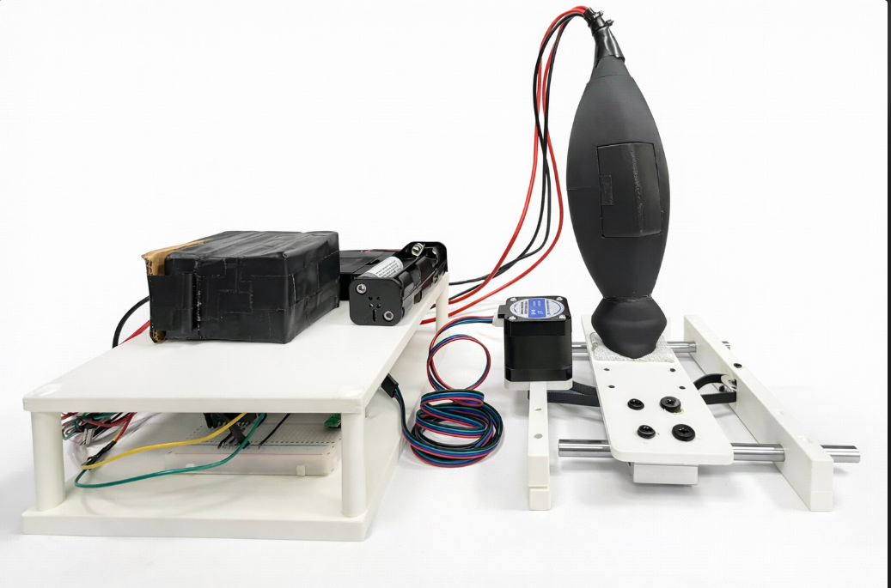
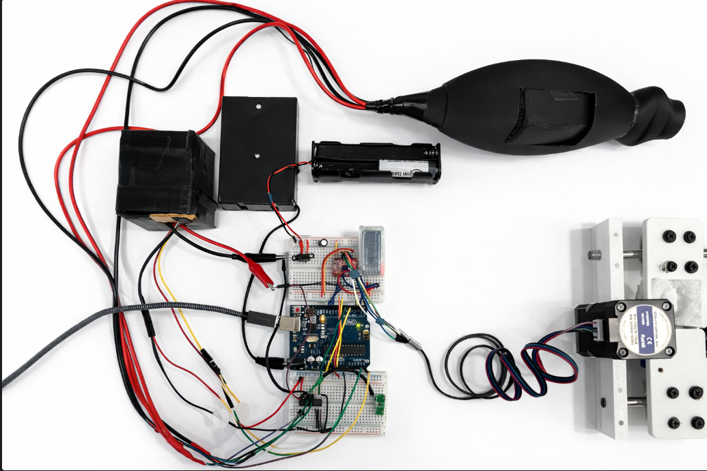
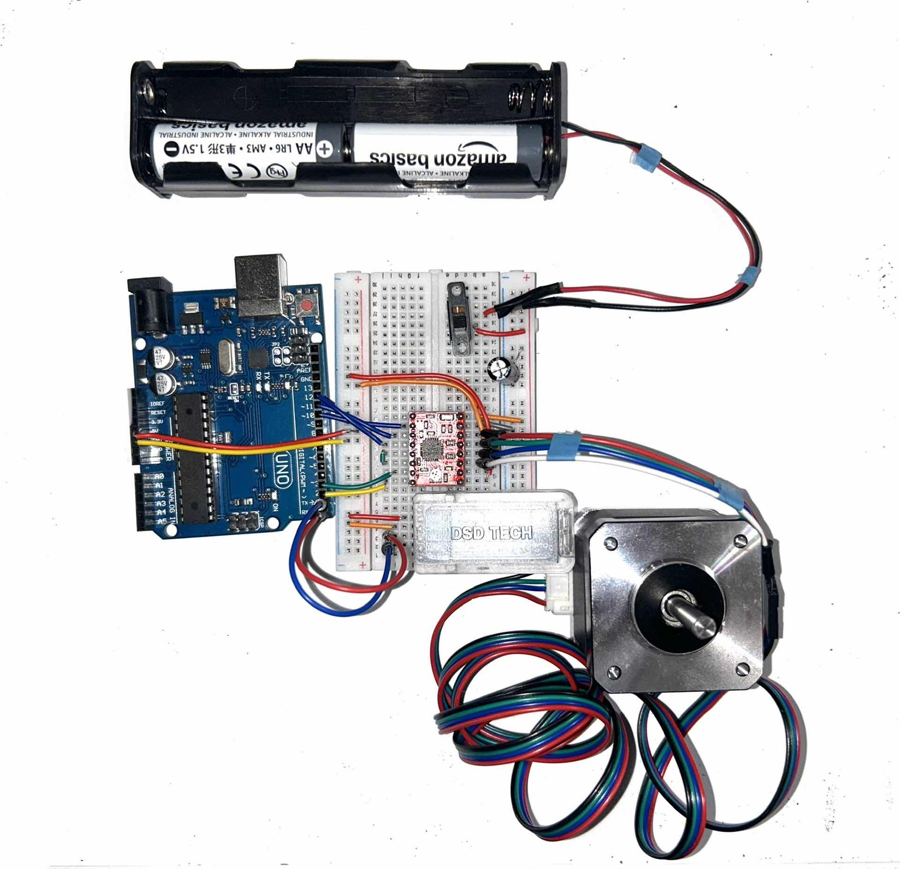
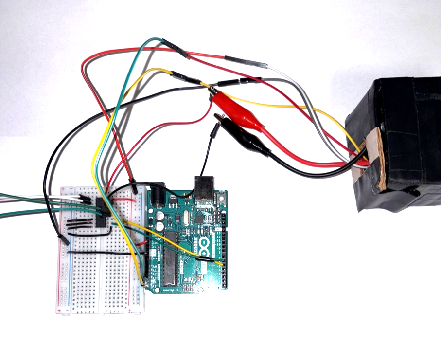
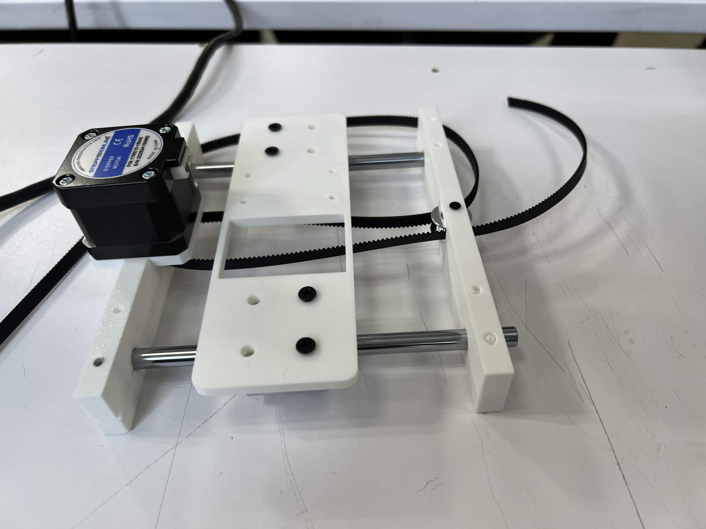
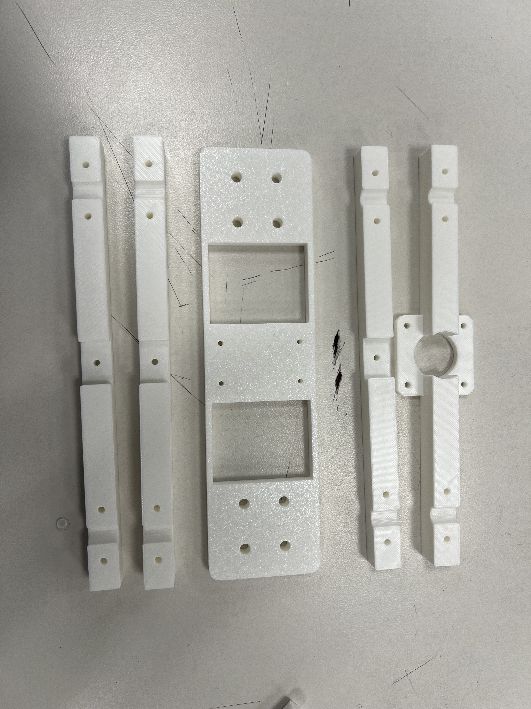

Week 1-3
Background research of components, understanding bio-impedance and possible improvements -weekly 30 min meetings.
This project proposes an imaging system for melanoma detection using EIS.
We have achieved the following with our design:
| Measures the impedance of the skin surface by applying a safe voltage level at specific frequencies. | |
| Current flows between two pairs of two electrodes that glide across the skin surface | |
| Transmits real-time impedance data to a PC for analysis from the MCU | |
 |
Features automatic adjustment when detecting impedance variations, for a more refined reading. |







ComponentsImpedance Sensing Subsystem
Motor Subsystem
Additional Components
|
Connections Diagram
|
As a widespread and often deadly cancer, skin cancer demands more accessible and accurate early diagnostic tools.
Early detection is critical, yet current diagnostic methods rely primarily on visual inspection and invasive biopsies, which are costly, uncomfortable, and inaccessible to many.
This project proposes an imaging system for melanoma detection using EIS — Electrical Impedance Spectroscopy.
EIS is a noninvasive method that consists of measuring the electrical properties of skin cells to detect early signs of malignancy. Subtle changes can be detected in cellular structure and composition to indicate the presence of skin cancer.
Background research of components, understanding bio-impedance and possible improvements -weekly 30 min meetings.
Developed block diagram and circuitry. Clear system layout and proof of project concept. Prepared proposal draft and presentation.
Proposal was introduced and approved. Ordered components and defined experimental setup & protocols.
Acquired AD5933 & Arduino UNO. Explored data acquisition and device communication. Delved into the idea of connecting the MUXs with probes/electrodes.
Finalizing final proposal for Senior Design I. Understanding future steps and planning how we intend to finish the prototype.
Began subsystem integration, initiated early code development, start of basic 3D design work, collection of initial impedance data, and testing of electrical connections and shielding to ensure reliable communication and reduced noise.
Preparing for midterm progress update with revised proposal and presentation. First prototype has been created. Refined anomaly check procedures, improved real-time data processing, and began GUI development.
System Researcher, EIS Signal Engineer, Embedded Firmware Developer
System Researcher, Electrode Interface & Signal Integrity Researcher, Multiplexer & Switching Logic Developer
3D Mechanism & Model Designer
Simple GUI Designer